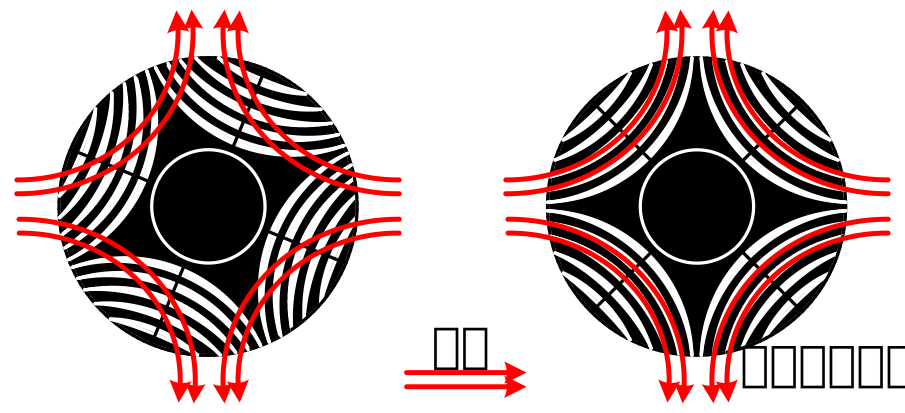

同步磁阻电机无传感器矢量控制算法
创建于2021-4-2
该项目完成于2017-3，原创
该项目完成于2017-3，原创
同步磁阻电机是近年来得到较快发展的一种电机，其结构坚固，效率较高，而成本相对较低。同时，没有永磁电机可能存在的退磁风险，所以适用于高温等环境恶劣的场合。同步磁阻电机可以当成没有永磁体的永磁同步电机，依靠dq轴电感的差异产生磁阻转矩来驱动电机运行。同步磁阻电机的运行遵循“磁阻最小原则”，也就是电机有着相最小磁阻的位置转动的趋势，如下图所示，在空载情况下，电机会在磁场作用下，运行到最小磁阻的位置。

由于同步磁阻电机可以当成没有永磁体的永磁同步电机，因此其控制也可以参考永磁同步电机的控制。需要注意的是，由于同步磁阻电机dq轴电感在不同的工况可能会有较大变化，因此在节能控制（如MTPA控制）时需要考虑这些因素。
同步磁阻电机的转子没有永磁体，因此依靠检测永磁体磁链的无传感器控制算法不再适用于同步磁阻电机。特使用其他的方法实现了同步磁阻电机的无传感器控制算法，算法的原理框图如下所示。同步磁阻电机无传感器控制算法的结构与永磁同步电机的类似，但速度和位置观测器有所不同。

所开发的同步磁阻电机无传感器控制算法已经在供水、洗衣机等多个行业得到了应用，运行稳定，性能较好。
需要补充的是，为了进一步提高同步磁阻电机的效率，有些厂家在同步磁阻电机中加入了铁氧体，使其成为“永磁辅助式同步磁阻电机”，这里不再展开说明。